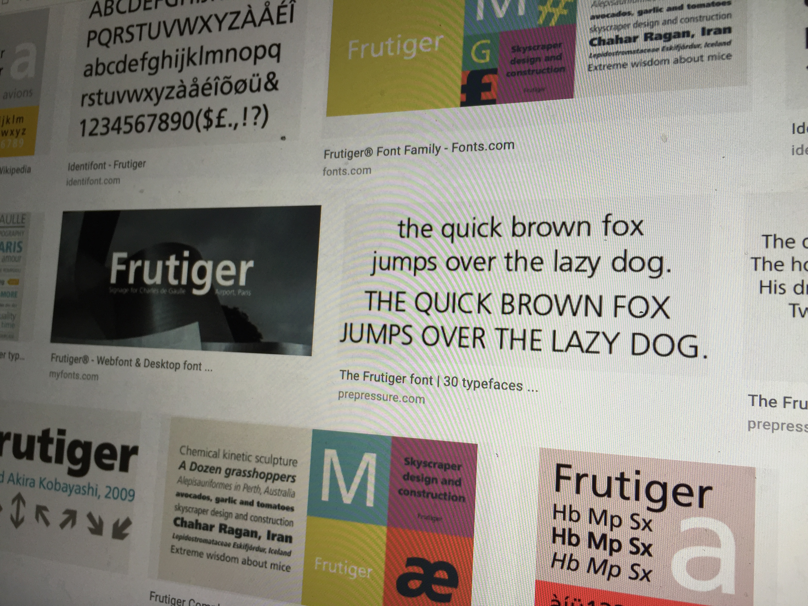

Frutiger
Typeface Name:
Frutiger, Designer: Adrian Frutiger, Date of Design/Release: 1976, Serif or San-serif: San-serif.
Frutiger combines both the clarity and legibility of san-serif typefaces with straight geometric lines, such as in the type Univers. The type was originally designed for airport use (was commissioned for France’s Charles De Gaulle Airport) and so, the type had to be clear, concise, and easy to read from far distances. We see this font often in large signs, as the purpose of the font is to be clear and attractive to viewers. As it’s san-serif, it’s easy to read, and is a display font. Although it’s easy to use for large posters, it’s also quite versatile in that it’s clear to use and is legible in small font sizes.
Frutiger was the font I chose for the DES016 Typography project; I chose it for it's clear legibility, distinctness in usage (aiport design, infographics, and in it's notable history.
Websites with Frutiger link:
USCFonts In Use
